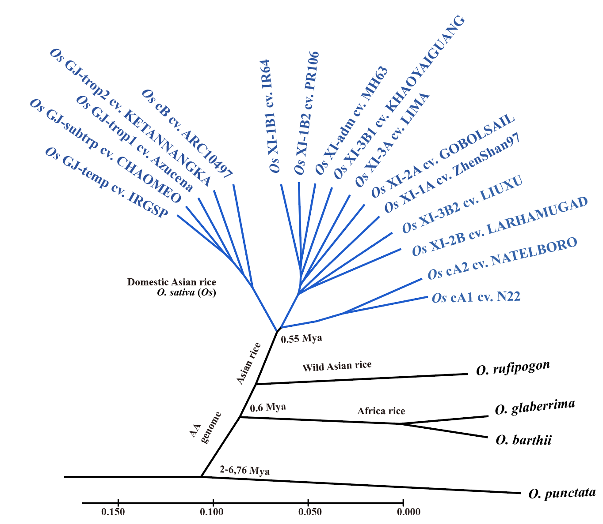

Welcome
Welcome!
We set up this website to provide general description and data release for the 16 PacBio Sequencing project based on Asian rice (Oryza Sativa ) population (K=15). In this project, we finished 16 accessions representing major subpopulations of two close-related O. sativa and 2 closet wild species. We feel the high-quality genome assemblies and annotations that we generated in this study will be of great interests to the yeast community. We want to share this valuable dataset to the community to facilitate future genomic and functional investigations on this important model organisms. The preprint of this work can be found
 Our manuscript: A platinum standard pan-genome resource that represents the population structure of Asian rice Nature scientific data! Our work is highlighted by newspapers and social medians twitter and wechat News
Our Asian rice Pan-genome inversion manuscript is online avaliable at BioRxiv!
You can read the paper via this link: https://www.nature.com/articles/s41597-020-0438-2
16 population structure level rice genomes are avaliable